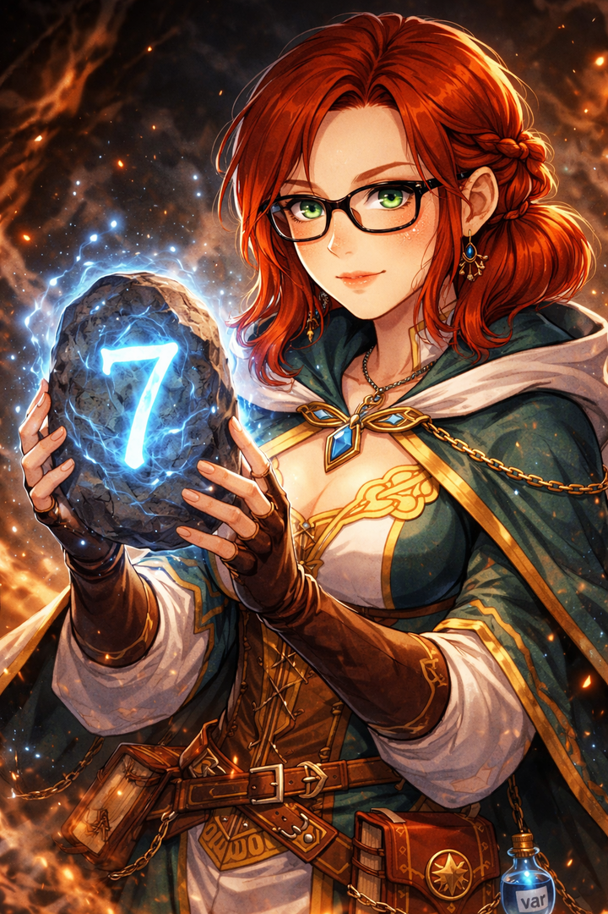
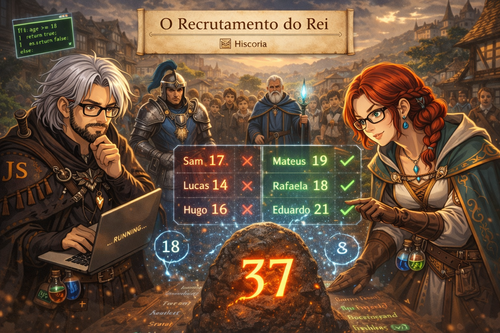
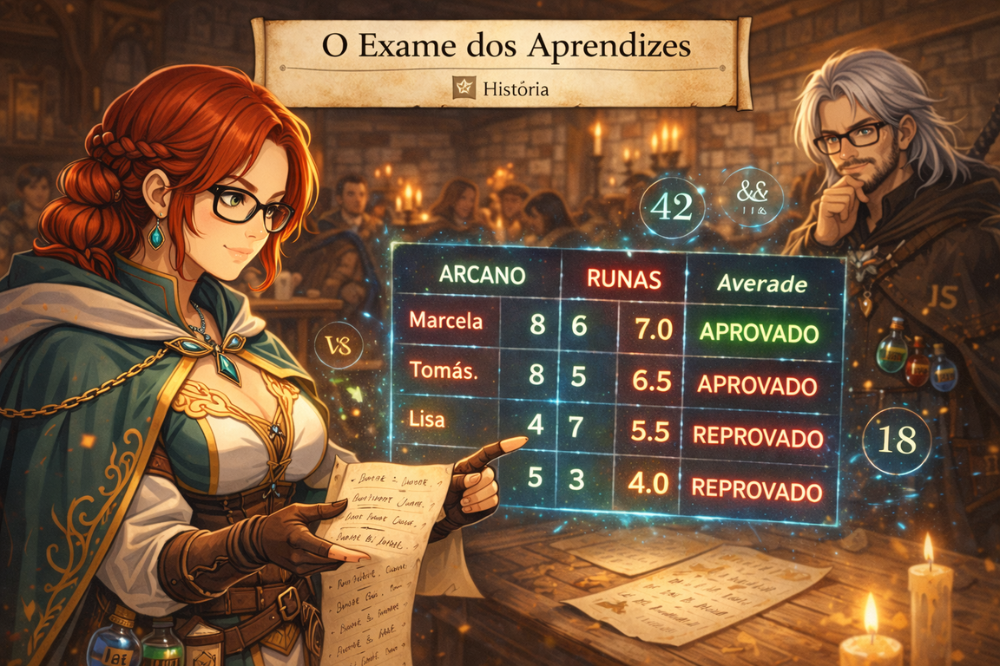

A Aldeia de Brighthollow
Após dias cavalgando por estradas lamacentas, você chega à pequena aldeia de Brighthollow.
O lugar fica entre colinas verdes e uma floresta antiga chamada Varnwood.
Apesar da paisagem tranquila, algo no ar parece… errado.
Os moradores parecem nervosos.
Logo na entrada da aldeia, um velho de roupas azuis o espera.
Ele se apresenta:
Mestre Ardan
um estudioso das antigas runas.
Ao seu lado estão:
Mira, alquimista da aldeia
Capitão Roderick, líder da guarda local
Ardan olha para você e diz:
“Se quer se tornar um verdadeiro bruxo da lógica, terá que provar seu conhecimento.
As runas respondem apenas àqueles que pensam com clareza.”
Ele aponta para uma pedra antiga sobre a mesa.
“Comecemos pelo primeiro teste.”
Missão1
⚔️ MISSÃO 1 ⚔️
A Pedra Rúnica do Destino
📜 História
Um camponês encontrou uma pedra estranha nas ruínas da floresta.
A pedra possui apenas um número gravado.
Mas Mestre Ardan explica algo curioso:
“As runas antigas dividem os números em duas forças fundamentais:
a Ordem dos Pares e o Caos dos Ímpares.”
Se a pedra for identificada corretamente, ela revelará um símbolo escondido.
Caso contrário… pode liberar uma energia instável.
Os moradores observam em silêncio enquanto você analisa o número.
🎯 Objetivo da missão
Criar um programa que:
receba um número e
descubra se ele é par ou ímpar

Analise
&
Missão2
⚔️ MISSÃO 2 ⚔️
O Recrutamento do Rei
📜 História
Enquanto você conversa com Ardan, um mensageiro real chega à aldeia trazendo notícias preocupantes.
Criaturas começaram a aparecer nas estradas do reino.
O rei ordenou que novas tropas fossem recrutadas imediatamente.
Capitão Roderick está tentando organizar voluntários na praça da aldeia.
O problema é que muitos jovens querem se alistar… mas nem todos têm idade suficiente.
Roderick suspira ao vê-lo.
“Bruxo, preciso de um método rápido para verificar quem pode entrar no exército.
A regra é simples: apenas quem tem 18 anos ou mais pode lutar.”
Se você conseguir criar um sistema de verificação, poderá ajudar a organizar o recrutamento.
🎯 Objetivo da missão
Criar um programa que:
receba a idade de uma pessoa
diga se ela pode se alistar ou não.

Magia de Análise
&
Missão3
⚔️ MISSÃO 3 ⚔️
O Exame dos Aprendizes
📜 História
Na taverna da aldeia, Mira comenta sobre um problema.
Alguns jovens de Brighthollow tentaram entrar na Ordem de Oxenhall, mas precisam passar por um teste.
Cada aprendiz fez duas provas:
uma de conhecimento arcano
outra de controle de runas
O resultado depende da média das duas notas.
Mira entrega um pergaminho com números escritos.
“Se puder calcular rapidamente quem passou, poderemos enviar apenas os aprovados para a capital.”
🎯 Objetivo da missão
Criar um programa que:
receba duas notas
calcule a média
mostre o resultado

Nota em conheciento Arcano:
Nota em controle de Runas:
Calcular Média
&
Missão4
⚔️ MISSÃO 4 ⚔️
O Cofre das Quatro Runas
📜 História
Na manhã seguinte, um minerador chega correndo à aldeia.
Ele encontrou algo estranho nas cavernas próximas:
Um cofre antigo coberto de runas.
Você, Ardan e Roderick vão até o local.
O cofre possui quatro símbolos gravados:
a Runa da Soma
a Runa da Subtração
a Runa da Multiplicação
a Runa da Divisão
Ardan examina os símbolos e conclui:
“Este é um mecanismo antigo da Ordem.
Apenas quem dominar os quatro cálculos fundamentais pode abrir este cofre.”
Se você resolver os cálculos corretamente, o cofre se abrirá.
E talvez revele algo importante sobre a corrupção das runas.
🎯 Objetivo da missão
Criar um programa que:
receba dois números
mostre:
soma
subtração
multiplicação
divisão